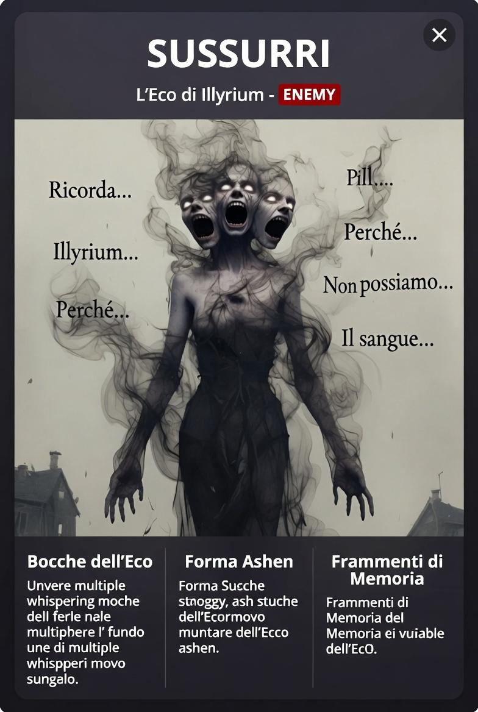

L'Eco di Illyrium
Non sono creature. Sono echi del luogo stesso.
ENEMY✓ IMPLEMENTATOPalette intenzionalmente desaturata — nessun colore caldo. Contrasto nero-su-bianco.
#252525#808080#F0EDE4| Zona | Hex | |
|---|---|---|
| Corpo fumo scuro | #252525 | |
| Fumo medio | #505050 | |
| Tendrili fumo | #808080 | |
| Volti cenere | #B8B8B8 | |
| Occhi (glow bianco) | #F0F0F0 | |
| Carta / ambiente BG | #F0EDE4 | |
| Ombre sfondo | #D0CCC4 | |
| Glow esplosione (morte) | #FFFFFF |
| Stato | Comportamento |
|---|---|
| In movimento | Invincibile — niente da colpire |
| Carica | Vulnerabile — finestra stretta. Telegraph: distorsione che si stringe, bocca appare |
| Morte | Esplosione AoE radiale indiscriminata — chain kill possibile se più d'uno |
| Meccanica | Dettaglio |
|---|---|
| Chiamata per nome | Voce di qualcuno che conosci — fermarsi ad ascoltare = già perso |
| Cono sonoro | Stordimento + danni; post-urlo il bersaglio smette di pensare |
| Targeting | Priorità sul bersaglio immobile — incentivo al movimento costante |
| Ostacoli | Non li toccano — scorrono tra di essi |